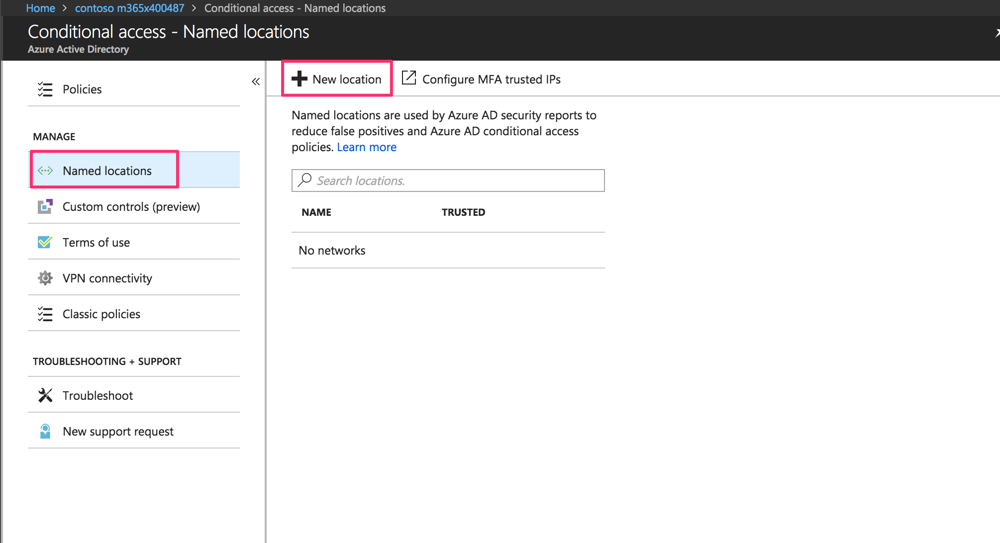
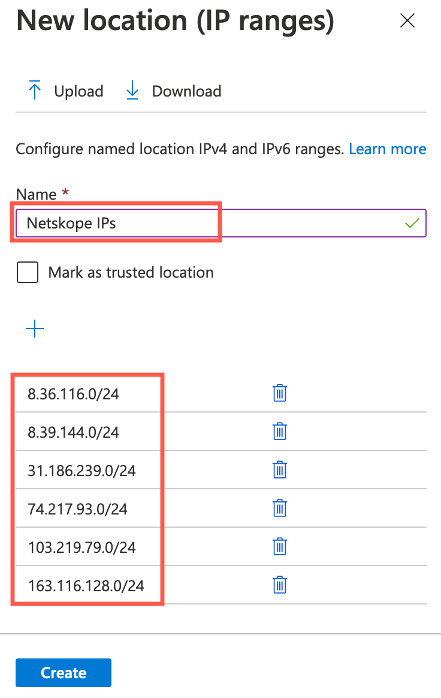
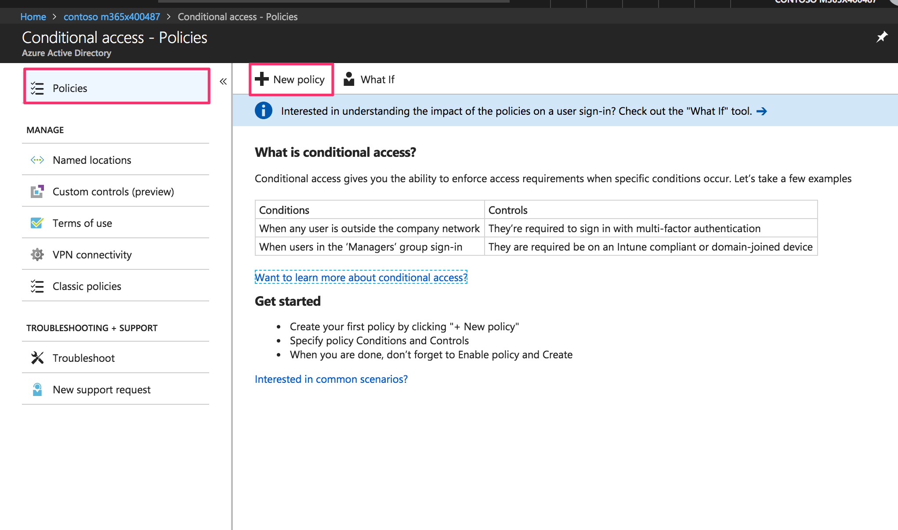
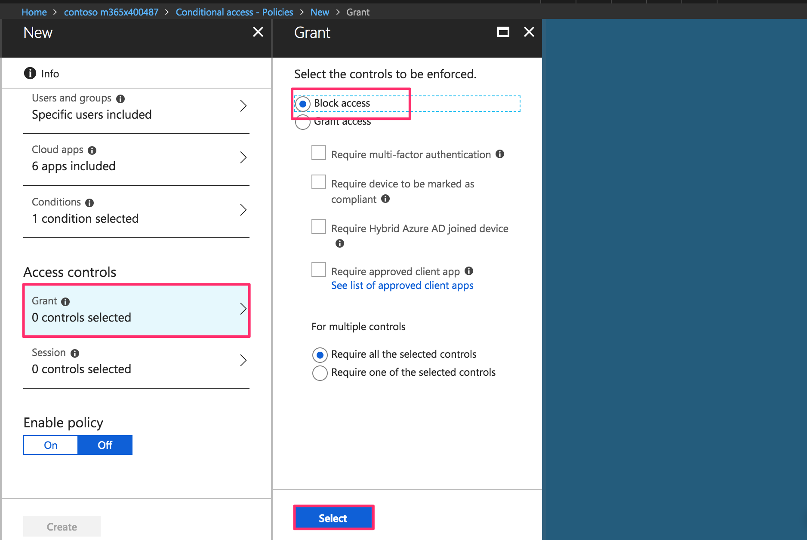

Configure the Conditional Access
Conditional Access Policies are required to define the criteria to control which devices may access the O365 services.
The policy described below stops users from connecting to O365 applications unless they are coming through the Netskope platform (using either the forward or reverse proxy).
Go back to Azure Portal dashboard and select Azure Active Directory > Conditional Access.

Click New > Apps and Users.
Under Manage, select Named Locations and click New Location.
 Name your new location (such as Netskope IPs) and add the following IP address ranges:
4.31.195.0/26
8.36.116.0/24
31.186.239.0/24
8.39.144.0/24
74.217.93.0/24
103.47.244.0/24
 Click Create.
Click Conditions > Locations > Exclude > Netskope Public IPs.
Back on the Conditional Access configuration page, select Policies and click New Policy.
 Name the Access Policy (such as Block all non-Netskope IPs).
Define which users or groups this policy should apply to.
Tip
Applying this to a test user or group to validate configuration before rolling out across your organization is recommended.
In the New panel, select Cloud Apps. In the Cloud Apps panel, define which Cloud apps this policy should apply to, and then click Done.
Important
If assigning to all Cloud apps, ensure that an administrator will continue to have access to the Azure portal to avoid getting locked out.

In the New panel, under Assignments, select Conditions, and then in the Conditions panel, select Locations.

In the Locations panel, set Configure to Yes.
Select Exclude, and then under Select, choose Netskope IPs.
Click Done in the Locations panel, and then click Done in the Conditions panel.
In the New panel, under Access Controls, select Grant, and then in the Grant panel, select Block Access and click Select.
 Verify all settings, set Enable policy to On, and then click Create.